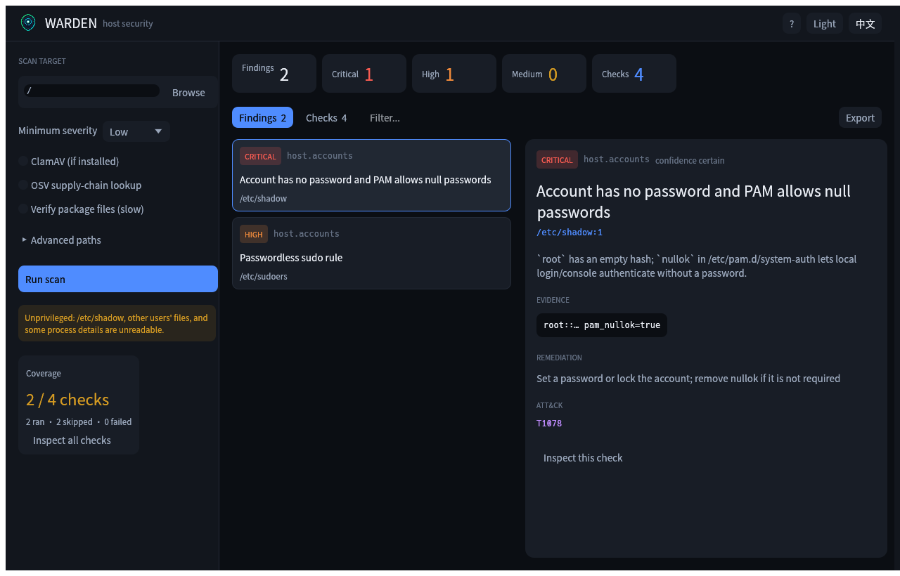
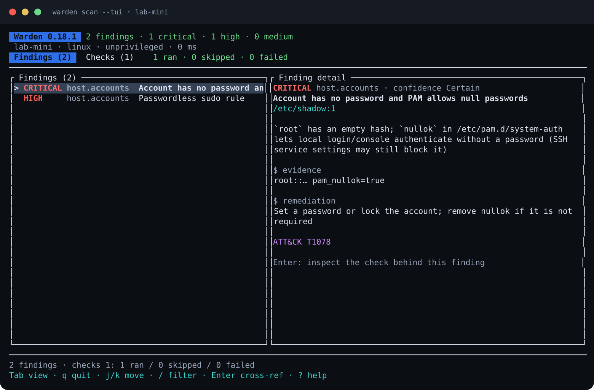
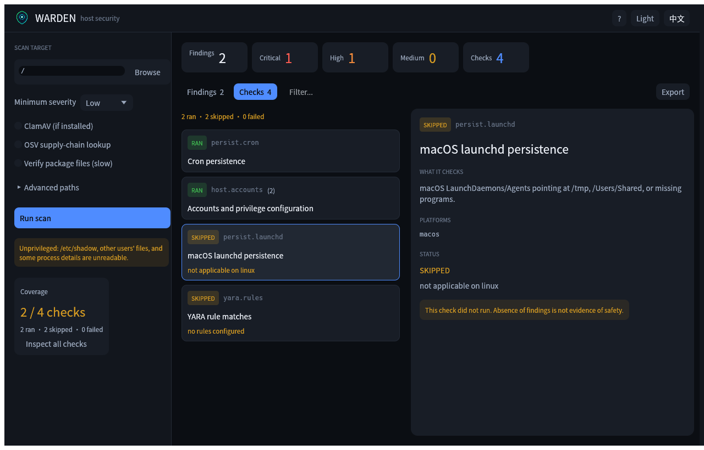

Persistence audit
Cron, systemd, launchd, shell rc, PAM, udev, at, SSH keys, and dynamic-loader hooks.
OPEN SOURCE · READ-ONLY
Warden audits the places attackers actually use to stay on a Unix host — persistence, privilege, listeners, packages, and signatures — with evidence for every finding.

WHAT IT DOES
Built for the moments after an incident, before a reboot, or whenever an installer asks for sudo.
Cron, systemd, launchd, shell rc, PAM, udev, at, SSH keys, and dynamic-loader hooks.
SUID/SGID, file capabilities, writable PATH entries, sudoers, and account configuration.
Deleted executables, temp-directory daemons, unusual low-port bindings, and missing binaries.
OSV vulnerabilities, known-malicious npm/PyPI/crates packages, package integrity, IOC feeds, YARA-X, and ClamAV.
Every check reports ran, skipped, or failed — and why. “Not checked” never looks like “clean”.
Run an untrusted installer offline, diff the filesystem, and score what it actually changed.
ONE REPORT, THREE SURFACES
The GUI, terminal UI, and CLI share the same engine and report model. No second implementation of the checks.


GET WARDEN
CLI and GUI packages are built by GitHub Actions for x86_64 and aarch64. Pick your platform, or browse the latest release.
aarch64
GUI .zip CLI binaryx86_64
GUI .zip CLI binaryglibc · X11 / Wayland
GUI .tar.gz CLI binaryglibc · X11 / Wayland
GUI .tar.gz CLI binary
macOS builds are ad-hoc signed. If Gatekeeper blocks the app, run:
xattr -dr com.apple.quarantine Warden.app && codesign --force --sign - Warden.app
FROM SOURCE
Rust 1.95+. The CLI and TUI need no runtime dependencies; the GUI needs a desktop session.
# clone
git clone https://github.com/yybit/warden.git
cd warden
# scan
cargo build --release
sudo ./target/release/warden scan
# desktop app
cargo run --release -p warden-gui
# terminal UI
./target/release/warden scan --tuiREAD THE DETAILS
Commands, checks, output formats, baselines, allowlists, and sandbox usage.
Build, packaging, privileges, architecture, and visual tests.
Architecture, scope, coverage philosophy, and the roadmap.
YARA, ClamAV, IOC feeds, OSV, and the licensing trade-offs.